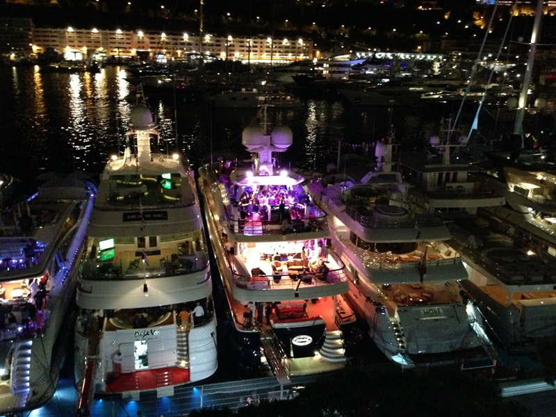
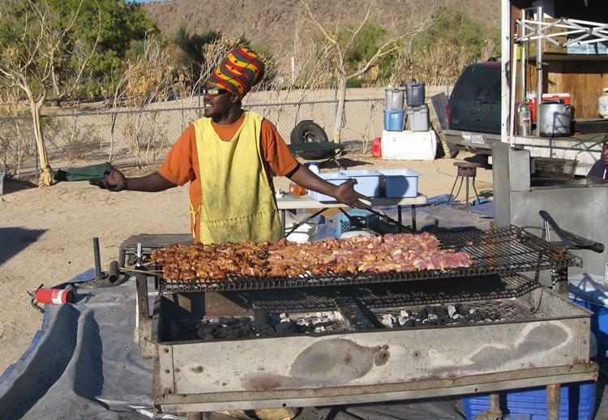
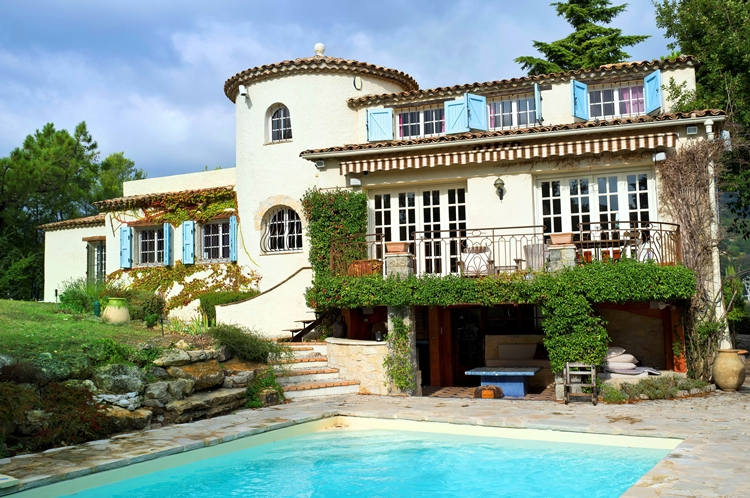

Catering at the Monaco Grand Prix
Red Radish were delighted to be one of the busiest catering companies at the Monaco Grand Prix again this year! The noise and atmosphere of the GP are an incredible experience, especially from up on the Y.Co private balconies from where our guests (and chefs) had an awesome view of the track and the super yachts in the port. Is it the altitude or the exhaust fumes which whet the appetite but our food certainly went down a storm? In any case our delicious catering and well organised parties are designed to delight and satisfy, and they certainly did that at all our 2013 champagne fuelled GP events! While carnage ensued down on the track, up high our clients revelled in the opportunity to witness the highs and lows of the racing – the intervention of the safety car allowing for glasses and plates to be recharged with scrumptious morsels without missing a breathtaking moment!
We were not only catering on private terraces in Monte Carlo, but also down on the waterfront at various glamorous parties attended by the F1 teams, their racing drivers and their beautiful entourages, where they celebrated and sipped champagne (not the drivers of course!) whilst getting a taste of our delicious bowl food and fabulous canapés Whilst local boy Nico rode out front leaving the havoc to ensue behind, the party atmosphere prevailed and the celebrations had free rein – glitz, glamour, fine wines, beautiful crockery and glass hire plus mouth watering food all supplied in a first class fashion by the team of hosts and hostesses from Red Radish!
For for a free and competitive quotation call or email Red Radish today!
Telephone – FR +33 (0)6 86 79 56 84 :: UK +44 (0)7 532 427 033
UK Festival Summer jobs at Glastonbury and more!
Festival Jobs galore! Red Radish are fast becoming the number one choice of festival organisers for all their crew catering requirements. This means we urgently need wonderful people to join our ever expanding team of chefs, front of house staff, kitchen porters, waiters and waitresses. We have got both temporary and Casual jobs and there are some great opportunities for students looking for summer work at places like Glastonbury where we will be crew catering at two of the coolest areas, Shangri-La and The Common.

We will also be catering at many of the big UK festivals this year including Electric Picnic, Carfest, Secret Garden, Lovebox, Wilderness, Somersault Boomtown and the already mentioned greatest festival of them all, Glastonbury. The list of big festivals is endless, with great events like Bestival, Creamfields, Rewind, Camp Bestival, V- Festival, Isle of Wight and Download all sharing centre stage.
To fit in with the Red Radish crew you will need to be ALL of the below. Please DO NOT waste your time (or more importantly ours) by applying unless you can definitely tick all the boxes!
It is not worth telling us you can do something when you obviously can’t. It will take us about two minutes to work it out and then you will end up with a long hitch-hike home.
On the other hand, if you do tick all these boxes then we would love to hear from you and can promise you a brilliant festival filled summer and something great for your CV
In the first instance please send your CV to [email protected]
The perfect wedding and people still talk about the cheeseboard now
The team at Red Radish made all the difference to our French Riviera wedding day. Wayne and Lucy had catered a close friend’s wedding a few years before which was so much fun and so well done that the day after I got engaged (and was still on holiday!) I called to make sure they’d be free to do ours.
Lucy is an oasis of calm and immediately knew the feel we wanted for the day and the right food to match…. people still mention the cheeseboard to us now 6 months later! The food was so good I think I am the only bride to have finished her pudding(s). It was 100% more than we could have expected and they had thought of everything. The wait staff were so friendly, which makes a huge difference to the ambiance on the day.
Wayne does an amazing job quietly running the show and when we came in to dinner had even lit extra candles, re-jigged things slightly and ultimately organised the evening even better than I did with my never-ending spreadsheets. He took a huge weight off which is what every bride needs.
They are a lovely, fun couple who are really in their element, which makes it a joy to deal with them – they really do invest themselves 100% in what they do. We wouldn’t hesitate in recommending Red Radish.
Helen & Clayton Bush
Hog Roast Catering and Rental in France including the Perfect Party Venue
Red Radish can help arrange you the perfect party and hog roast in France. You can even rent the bottom of our beautiful South of France garden as your party venue. And if you think you are capable of cooking your own hog or suckling pig then why not rent our spit and equipment. It is not as difficult as you might think and will guarantee you a perfect party, wedding or corporate event that people will talk about for years to come. We can even supply the very best Cochon de lait!
You can phone us in the UK on +44 (0)7532 427033 . If you are just too busy to talk then send us a quick email letting us know what you need. The Red Radish email address is [email protected]
Artist Catering and Riders for bands including Razorlight, The Feeling and Texas.
Another great event catering job Red Radish handled during the course of summer 2012 was to supply the artist backstage catering and alcohol riders at a music festival in Hampshire. Bands included Razorlight, The Feeling, Magic Numbers and Texas and as usual their management company were delighted with not only the great food but also our friendly service. Bands tend to travel with quite an entourage including production, sound and lighting plus often a large bunch of family and friends who all need looking after and feeding. It is often an an ever-changing requirement that requires not only an adaptable team but also meticulous planning
Timing, privacy, quality and enthusiasm are all also essential in making sure (sometimes) demanding artists and band members are 100% happy and ready to sing their hearts out. Rock stars and warm beer are not after all two likely bed-fellows so every detail needs to be totally perfect and usually in a situation where the most basic of equipment is often not quite to hand . We however love the challenge of keeping everyone happy as we try to juggle the rest of the crew’s requirements around the lead-singers passion and express wishes for a Vegemite sandwich and an ice cold bottle of Brazilian Skol beer at being delivered to his dressing room at exactly 7.43 in the evening. That is after all Showbiz!
See exactly what Joe Malik of 24:7 Media and Events thought about Red Radish.
A Televised Red Radish Supper Club filmed for mainstream TV
Finally we have got around to uploading the video of the Red Radish Supper Club shoot for a Television series called Wild Camping which was produced by Mike Fiddler at RoadDog Television Productions. Louise Bird and Karima Mo both looked great on camera whilst the villa made a great film location. A chunk of the organisation for the Cote d’Azur leg of the programme was organised by Red Radish’s Cannes based Wayne Brown who has worked as a fixer on other TV and film productions set in the South of France including a recent viral ad campaign based in St Tropez for Citroen Cars and the launch of the DS5 Star Experience.
A beautiful Boutique Bed & Breakfast near Cannes
The combination of a beautiful chic typical Provencal villa and our successful catering company based in Cannes (serving not only the UK but the entire South of France and various other far-flung places) has lead to the exciting opening of one of the best value small boutique B & B places on the French Riviera. Everyone knows that the guys at Red Radish are famous for fantastic food and fine hospitality but now you can check yourself in for a few nights luxury at Villa Aurita bed & breakfast. Wonderful relaxation around their very own azur blue swimming pool. Who needs a hotel eh?
In its wonderful location surrounded by picturesque French villages like Grasse, Valbonne, Mougins and St Paul de Vence you are guaranteed to have landed in one of the best kept secrets on the Cote d’Azur. Also just a short drive from the beaches of Cannes, Antibes and Juan les Pins you will be spoilt for choice of things to do on your holiday in the South of France. There is plenty of parking but you do not even really need a car as there are plenty of great options for touring by bus or train.
And you never know, you could get really lucky and you might even be able to wangle yourselves a couple of places at a secret Red Radish Supper club whilst you are in town.
You can find out more by emailing [email protected] or calling +44 (0)7532 427033
Spring & Summer Provencal Menu
Do you really want to go on holiday and cook? You have probably spent a fortune renting a beautiful Cote d’Azur villa so why not go the whole hog and hire a chef or cook to cook you dinner or lunch. We can cater for just one special dinner party at home or a special package where we can come and create some great Provencal classics during the course of your vacation. We do everything from setting the table to clearing up and the costs are generally much cheaper than going out to eat and we obviously use the freshest ingredients straight from the market. After all there can’t be much better than going straight from the pool to the dining table.
Our 2012 spring and Provençal menus
Canapés
Salmon cakes with lime mayo
Cucumber cups with crab salad
Basil mussels
White Bait Fritters with tartare sauce
Mini quiche Lorraine
Tomato & Basil bruschetta
Salt cod fritters
Cheese shortbreads with pesto & sun dried tomato
Goat cheese & caramelised onion tartlets
Avocado mousse prawn cocktails
Stuffed mushrooms
Vegetable crudités and dips
Whole roasted Brie with fresh bread
Spinach & feta triangles
Olive & goat cheese tapenade croûtes
Pissaladiere
Hors d’ Oeuvres
Roasted Red pepper and Plum Tomato soup with Fresh Basil
Fish Soup with Aioli Croutons
Gazpacho
Fig and Parma Ham Salad
Pate de Campagne with Toast and Pickles
Mains
Chicken Breast Stuffed with creamy pesto sauce and Roasted Baby tomatoes
Beef Daube Provençal
Provençal Aubergine Gratin
Salmon wrapped in Parma Ham
Vegetables
Ratatouille
Green beans in lemon and Cracked Pepper
Courgette and Cherry Tomato Rosemary Skewers
Roasted Herb de Provence Potatoes
Dauphinoise Potatoes
Creamed Potatoes with French Grain Mustard
Puddings
Crème Brulee
Strawberry Tart
Chocolate Mousse
Summer Berry Compote with Mascarpone Cream
A selection of the best French Cheeses
Followed of course by Tea and Coffee
Please note that this is just a small sample of what is available and we can of course cook whatever you fancy eating!
Check out your Location in France
Whether you are production manager coming to the South of France to arrange a film or photography location, a bride and groom arranging yet another Red Radish wedding, or maybe just visiting one of our famous Supperclubs venues you will be pleased to hear that British Midland International have opened up a new route down to Nice and are now offering you a chance to make an event out of it by travelling Business Class, but with alll the benefits of an economy price tag. You can now return for as little as £159 and enjoy more legroom and a full Business Class service on their twice daily flights to Nice, including complimentary access to the flagship business class lounge at London’s Heathrow airport.

The Côte d’Azur is the jewel in the France’s crown, perched on the edge of the Mediterranean, it is famously loved for Summer getaways and it’s easy access to gems such as Cannes and Saint Tropez, but with so much to do, why not escape the crowds with a Winter visit and discuss your party or production needs whilst you are here? To think, it could all be yours for a decidedly un-ritzy fare too. Book your seat today (or even better, get your ‘people’ do it for you).
This feature was adapted from an original article on FR2DAY.COM

{kind=link}
{kind=link}
{kind=link}
{kind=link}
{kind=link}
{kind=link}
{kind=link}